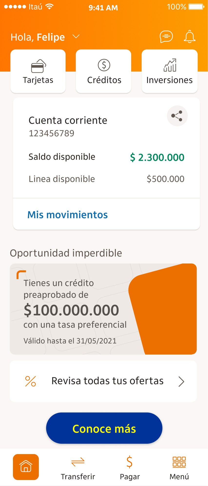
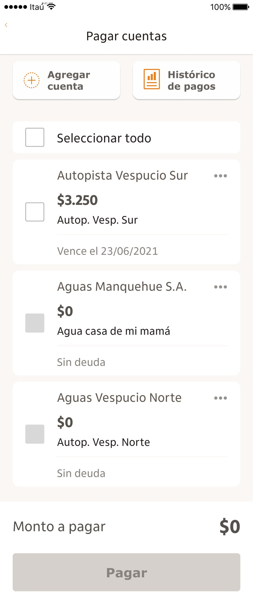
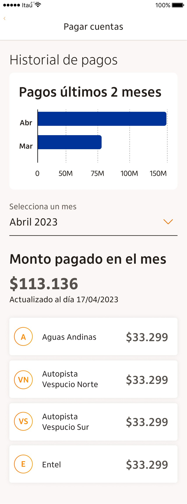
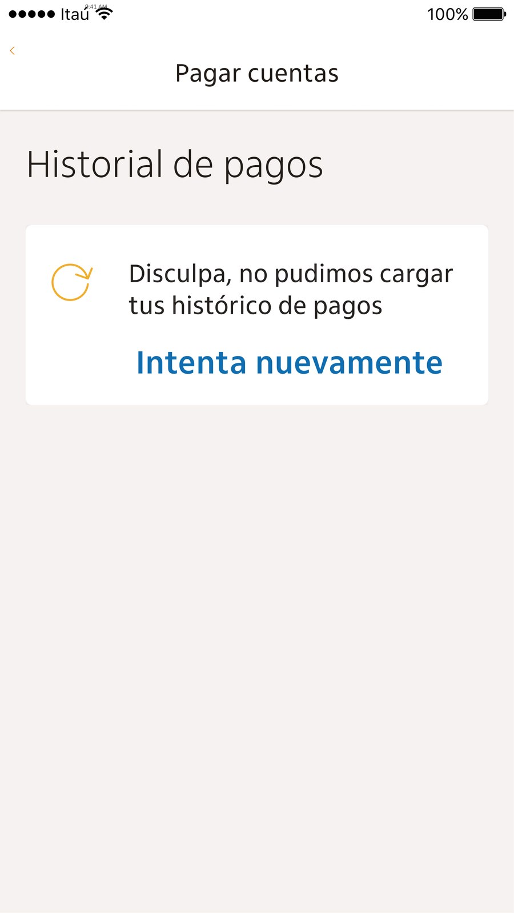
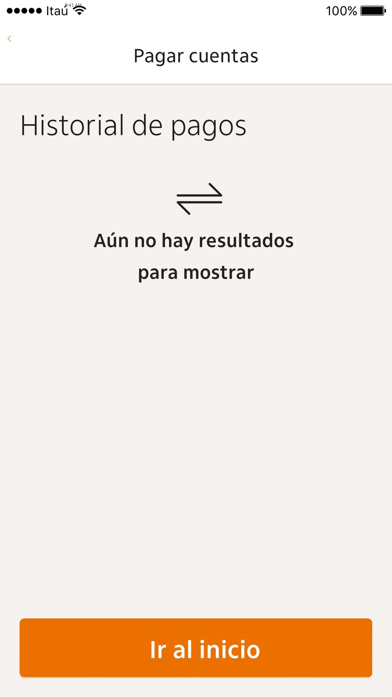

06Mobile banking · UX researchBanca mobile · Investigación UX · 2023
Itaú Chile: Payment historyItaú Chile: Historial de pagos
A payment history feature for bill payments in Itaú Chile's mobile app, designed and validated with remote usability testing.
Una funcionalidad de historial de pagos de cuentas en la app mobile de Itaú Chile, diseñada y validada con tests de usabilidad remotos.

The challenge
El desafío
Itaú Chile customers pay their bills from the app, but had no simple way to see how much they had paid over time or check a specific month. The goal was a payment history inside the bill payment section.
Los clientes de Itaú Chile pagan sus cuentas desde la app, pero no tenían una forma simple de ver cuánto pagaron a lo largo del tiempo ni consultar un mes puntual. El objetivo era un historial de pagos dentro de la sección de pago de cuentas.



Edge cases
Casos borde
I designed variants for a customer's first month (no chart yet), a month in progress with no payments (showing the previous month), charts with months without activity, and empty and error states.
Diseñé variantes para el primer mes del cliente (sin gráfico todavía), un mes en curso sin pagos (se muestra el mes anterior), gráficos con meses sin actividad, y estados vacíos y de error.


Validation with Maze
Validación con Maze
The tree test showed where users expected to find the history; misclick rates and heatmaps pointed to the month selector as the screen to iterate.
El tree test mostró dónde esperaban encontrar el historial; las tasas de misclick y los mapas de calor señalaron el selector de mes como la pantalla a iterar.